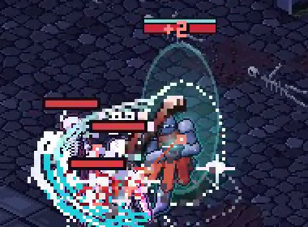
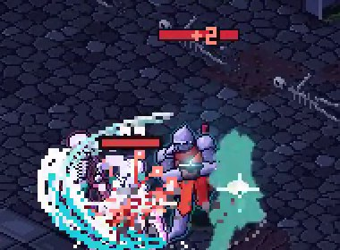
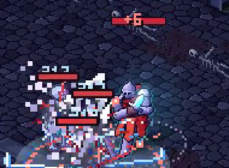
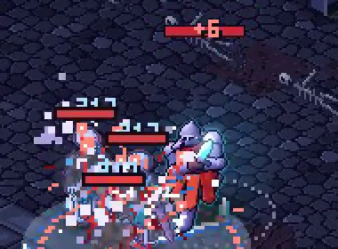
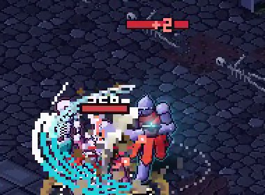
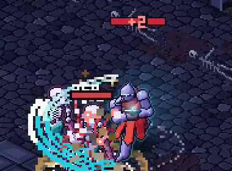
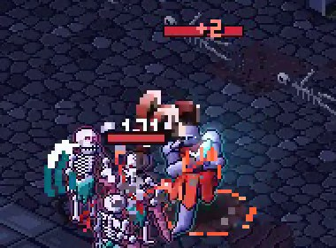
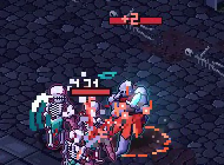

You asked: “Leech already had a nice animation for HP going from the enemy to the player. Why are the new melds different?” They shouldn't have been. Each Leech meld had its own drain in its own colour, drawn on top of Leech's. Now every Leech meld uses the game's own Leech drain: red beads with red tails curving from the enemy into him, and his pulse as the life lands. A monster drinking from him with a Leech meld gets the same red wisps, flowing the other way. Each meld's own twist stays on top, such as Lamprey's ring of teeth and Bloodtide's wave.
All eight: Lamprey, Bloodbloom, Lancet, Feeding Frenzy, Transfusion, Bloodtide, Coldblood and Marrow. Before on the left, after on the right.








Tell me in the chat to switch it on, or what to change. It stays switched off until you say yes.